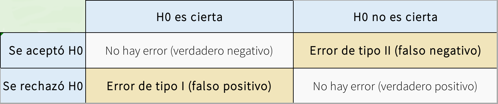

Instrucciones
Los conceptos del error tipo I y error tipo II nos permiten entender la robustez (o fragilidad) de nuestras herramientas estádisticas:

Estos conceptos se suelen cuantificar con 2 medidas relacionadas: el poder estadístico y la tasa de error tipo I. El poder estadístico es la probabilidad de que una prueba rechace (correctamente) una hipótesis nula falsa. Osea la probabilidad de encontrar una diferencia significativa cuando si la hay. La tasa de error tipo I se refiere a la probabilidad de encontrar una diferencia significativa cuando no la hay. En esta tarea exploraremos estos conceptos combinando bucles con simulaciones estadísticas.
Primero vamos a definir las simulaciones que usaremos. El siguiente código simula un juego de datos donde el predictor y la variable respuesta no están asociados:
# definir semilla
set.seed(123)
# numero de observaciones
n <- 50
# variables aleatorias
x1 <- rnorm(n = n, mean = 0, sd = 1)
y <- rnorm(n = n, mean = 0, sd = 1)
# crear data frame
xy_datos <- data.frame(x1, y)Podemos correr un modelo lineal que estime la (falta de) asociación entre las variables:
# construir model
xy_mod <- lm(formula = y ~ x1, data = xy_datos)
# calcular el resumen
summ <- summary(xy_mod)
# extraer el valor de p
summ$coefficients[2, 4]## [1] 0.8046743Note que la última linea de código devuelve el valor de p.
También podemos hacer el mismo ejercicio con un juego de datos donde las variables están asociadas de la siguiente forma:
# numero de observaciones
n <- 50
b0 <- -4
b1 <- 0.55
# variables aleatorias
x1 <- rnorm(n = n, mean = 0, sd = 1)
error <- rnorm(n = n, mean = 0, sd = 1)
y <- b0 + b1 * x1 + error
# crear data frame
xy_datos <- data.frame(x1, y)
xy_mod <- lm(formula = y ~ x1, data = xy_datos)
summ <- summary(xy_mod)
# extraer el valor de p
summ$coefficients[2, 4]## [1] 0.0002208791replicate que repita la simulación de
variables no asociadas 1000 veces y que calcule el
valor de p para cada juego de datos simulado en cada iteración. ¿Qué
proporción de las 1000 repeticiones produjo un valor de p mayor o igual
a 0.05 (osea, no fueron significativos)? Note que estamos calculando la
tasa de error tipo I.
n = 5). ¿Como afecta este cambio la proporción de
repeticiones con un valor de p mayor o igual a 0.05?
replicate que repita la simulación de
variables asociadas 1000 veces y que calcule el valor
de p para cada juego de datos simulado en cada iteración. ¿Qué
proporción de las 1000 repeticiones produjo un valor de p mayor o igual
a 0.05? Note que esta es una medida del poder estadístico.
n = 5). ¿Como afecta este cambio la proporción de
repeticiones con un valor de p mayor o igual a 0.05?
rbinom() para generar ‘x1’ (puede
usar rbinom(n = n, size = 4, prob = 0.6) para esto). ¿Como
afecta este cambio la proporción de repeticiones con un valor de p mayor
o igual a 0.05?
rbinom() para generar ‘x1’ (puede usar
rbinom(n = n, size = 4, prob = 0.6) para esto). ¿Como
afecta este cambio la proporción de repeticiones con un valor de p mayor
o igual a 0.05?
Información de la sesión
## R version 4.2.0 (2022-04-22)
## Platform: x86_64-pc-linux-gnu (64-bit)
## Running under: Ubuntu 22.04.1 LTS
##
## Matrix products: default
## BLAS: /usr/lib/x86_64-linux-gnu/blas/libblas.so.3.10.0
## LAPACK: /usr/lib/x86_64-linux-gnu/lapack/liblapack.so.3.10.0
##
## locale:
## [1] LC_CTYPE=en_US.UTF-8 LC_NUMERIC=C
## [3] LC_TIME=es_CR.UTF-8 LC_COLLATE=en_US.UTF-8
## [5] LC_MONETARY=es_CR.UTF-8 LC_MESSAGES=en_US.UTF-8
## [7] LC_PAPER=es_CR.UTF-8 LC_NAME=C
## [9] LC_ADDRESS=C LC_TELEPHONE=C
## [11] LC_MEASUREMENT=es_CR.UTF-8 LC_IDENTIFICATION=C
##
## attached base packages:
## [1] stats graphics grDevices utils datasets methods base
##
## other attached packages:
## [1] kableExtra_1.3.4 knitr_1.40 xaringanExtra_0.7.0
##
## loaded via a namespace (and not attached):
## [1] formatR_1.12 highr_0.9 pillar_1.8.1 bslib_0.4.0
## [5] compiler_4.2.0 jquerylib_0.1.4 tools_4.2.0 uuid_1.1-0
## [9] digest_0.6.29 jsonlite_1.8.0 evaluate_0.16 lifecycle_1.0.2
## [13] tibble_3.1.8 viridisLite_0.4.1 pkgconfig_2.0.3 rlang_1.0.6
## [17] cli_3.4.1 rstudioapi_0.13 yaml_2.3.5 xfun_0.33
## [21] fastmap_1.1.0 stringr_1.4.1 httr_1.4.4 xml2_1.3.3
## [25] vctrs_0.4.1 sass_0.4.2 systemfonts_1.0.4 webshot_0.5.3
## [29] svglite_2.1.0 glue_1.6.2 R6_2.5.1 fansi_1.0.3
## [33] rmarkdown_2.16 magrittr_2.0.3 scales_1.2.1 htmltools_0.5.3
## [37] rvest_1.0.2 colorspace_2.0-3 utf8_1.2.2 stringi_1.7.8
## [41] munsell_0.5.0 cachem_1.0.6